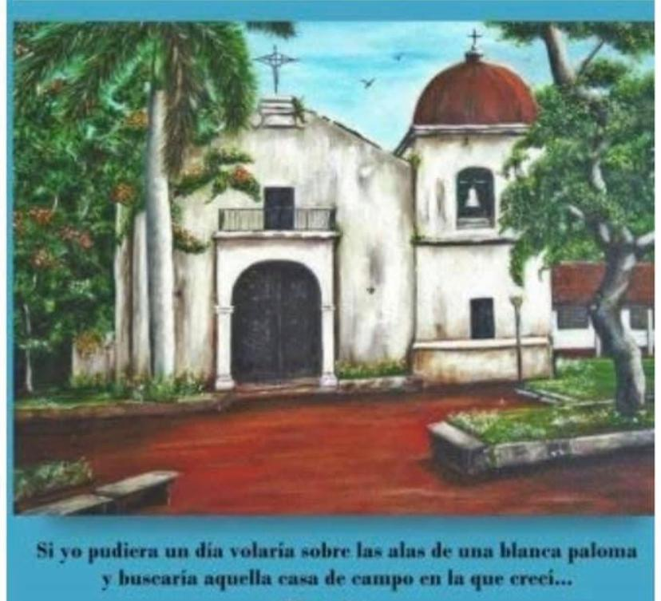
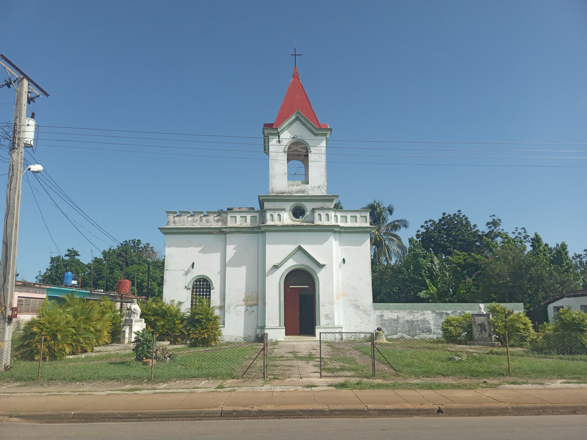
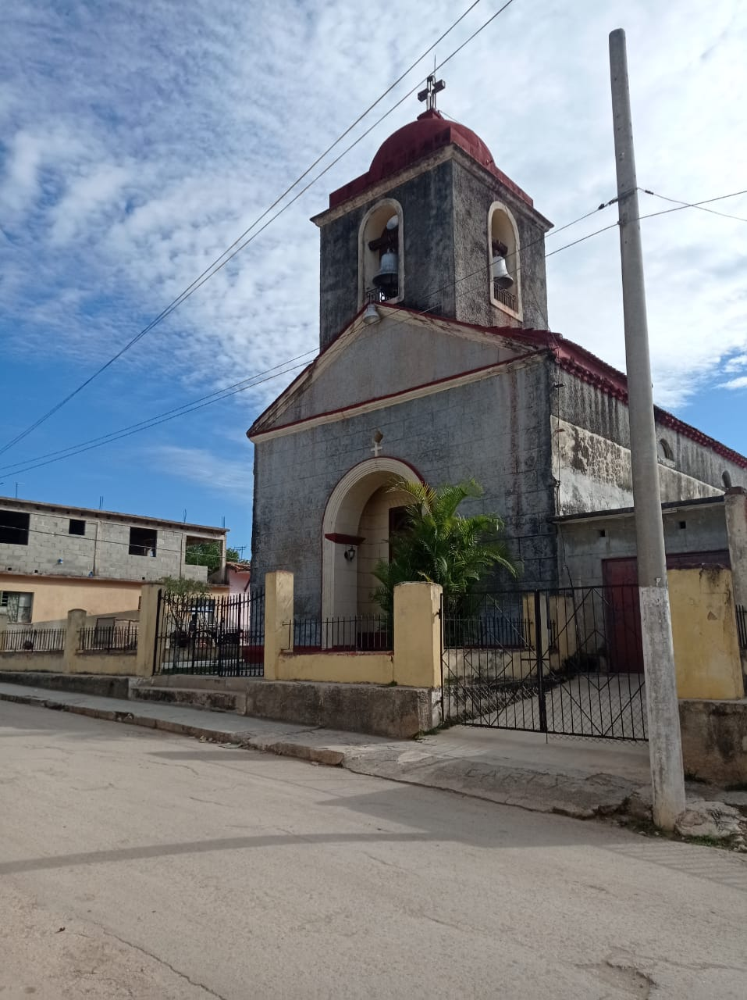
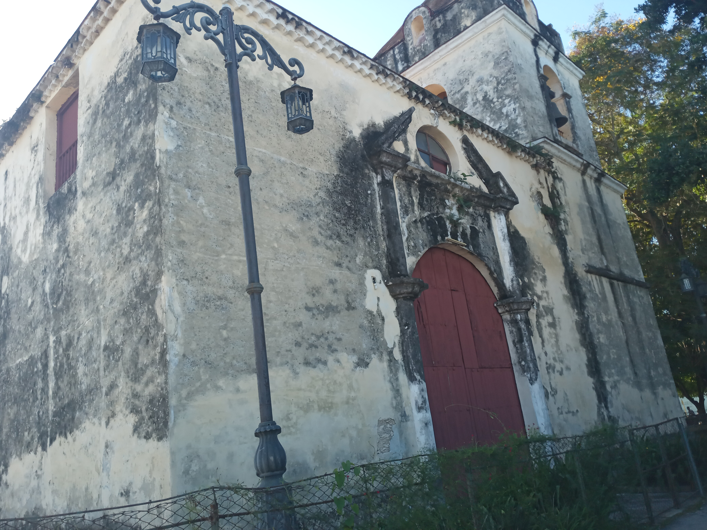

Places in Haban Archbishop where we had carried out genealogycal research
As our main goal is to search in parish record, here we show some of the main parishes where we research.
Would you like to GO BACK?
Index
- Artemisa - Alquizar
- Mayabeque - Bejucal
- Mayabeque - Quivican
- Mayabeque - La Salud
- C. Habana - Santiago de las Vegas
- C. Habana - Wajay
- C. Habana - Calvario
- C. Habana - San Miguel del Padron
- C. Habana - Potosi
- C. Habana - Santa Maria del Rosario
- C. Habana - Managua
- C. Habana - Jesus del Monte
- C. Habana - Peñalver
- C. Habana - Guanabacoa
- C. Habana - Regla
- C. Habana - Santo Cristo del Buen Viaje
- C. Habana - Santo Angel Custodio
- C. Habana - La Caridad
- C. Habana - Nuestra Señora de Monserrate
- C. Habana - Sagrado Corazon de Jesus (Vedado)
- Mayabeque - San Jose de las Lajas
- Mayabeque - Tapaste
- Mayabeque - Güines
- Mayabeque - Jaruco
- Mayabeque - Catalina de Güines
- Mayabeque - San Antonio de Río Blanco
- Mayabeque - San Matías de Río Blanco/Santa Cruz del Norte
- Mayabeque - Caraballo/Bainoa
- Mayabeque - Casiguas
- Mayabeque - Madruga
- Mayabeque - Pipian
- Mayabeque - Aguacate
Artemisa - Alquizar
Alquízar, a municipality in Cuba's Artemisa province, is rooted in a historical encounter when Christopher Columbus arrived at Guanímar's coast in 1494. Founded in 1616, it's the oldest town in the Artemisa province and consists of Pulido, Dágame, and Guanímar. The area's rich soil enables the cultivation of crops, catering to the market in the capital.
The town also hosts Alquitex, a textile industry, and the "Rubén Martínez Villena" University of Pedagogical Sciences. Its origins date back to Captain Sancho de Alquízar, who gained a land concession in 1617, evolving into the Rancho de Alquízar.
Historically, Alquízar experienced significant stages: from Spanish colonization to the establishment of shipbuilding activities. The area's forest exploitation led to a demographic increase, evolving into a town devoted to various economic activities.
C. Habana - Managua
Managua, one of the oldest settlements in the Arroyo Naranjo municipality, La Habana province, Cuba, has a rich history rooted in its native inhabitants, who named the place "Mana Aguaná" or "Managuaná" due to its natural features, including abundant springs and streams. The settlement accelerated around 1730 after a fire in the Villa of San Cristóbal de La Habana, leading to the need for new lands. In the 18th century, Managua became a hub for sugar mills, and in the 19th century, it transformed into a prominent cattle-raising area known as the "Cuenca Lechera de Managua." Today, Managua maintains its cultural traditions and hosts festivities in honor of its patron saints, San Isidro el Labrador and the Lady of Remedios. The Church of Managua, built in 1862, stands as a historic landmark, preserving records dating back to 1730.
C. Habana - Santa Maria del Rosario
Santa María del Rosario, part of Cotorro municipality in La Habana, Cuba, originated in 1732 by the First Count of Casa Bayona, José Bayona Chacón Fernández de Córdoba. It was established to compensate for losses incurred by the Count when the Quiebra Hacha sugar mill's slave revolt affected his profits. The town saw industrial development in the 20th century, with establishments like Antillana de Acero and the Cervecería Modelo. Its growth was furthered by the railway and the Central Road construction.
Santa María continues to hold historical significance, with its notable sites like the 18th-century church, declared a National Monument in 1946. The balneario, known for its healing mineral waters, has been an essential health center since its establishment in the 19th century.

C. Habana - Guanabacoa
Guanabacoa, a district and town in the province of La Habana, Cuba, known as "the villa of Pepe Antonio," boasts extensive plains conducive to agriculture. The town has a historical ambiance, rooted in over four centuries of existence. Guanabacoa was founded on June 12, 1554, as Villa de Nuestra Señora de la Asunción, and there was a historical debate about its origin. However, research by historian Maximino Gómez Álvarez in 1987 conclusively confirmed its 1554 founding, settling the historical controversy. In 1555, Guanabacoa briefly became the capital due to a French pirate attack. Throughout the 17th and 18th centuries, it prospered with sugar and tobacco production, receiving the title of "Villa" in 1743. After the Seven Years' War, Guanabacoa hosted a community of Florida Indians, mainly Apalachees and Yamasees. Today, the town is undergoing restoration efforts to preserve its cultural heritage.
Guanabacoa, a district and town in the province of La Habana, Cuba, known as "the villa of Pepe Antonio," boasts extensive plains conducive to agriculture. The town has a historical ambiance, rooted in over four centuries of existence. Guanabacoa was founded on June 12, 1554, as Villa de Nuestra Señora de la Asunción, and there was a historical debate about its origin. However, research by historian Maximino Gómez Álvarez in 1987 conclusively confirmed its 1554 founding, settling the historical controversy. In 1555, Guanabacoa briefly became the capital due to a French pirate attack. Throughout the 17th and 18th centuries, it prospered with sugar and tobacco production, receiving the title of "Villa" in 1743. After the Seven Years' War, Guanabacoa hosted a community of Florida Indians, mainly Apalachees and Yamasees. Today, the town is undergoing restoration efforts to preserve its cultural heritage.
C. Habana - Santo Angel Custodio
Located at 2 Compostela Street in Old Havana, the Church of the Santo Ángel Custodio, established in 1695 and officially recognized as a church in 1788, stands majestically near the former Presidential Palace and the Loma del Ángel, an enchanting site in Havana's historical center. Originally built as a Franciscan hermitage, its strategic positioning along the old city wall allowed it to serve as a lookout for potential pirate invasions, offering sweeping views of the bay.
Over time, the church underwent various renovations, notably after a hurricane in 1846, resulting in its present neo-Gothic style. It remains a historic icon, notable for being the site of Félix Varela and José Martí's baptisms and a setting in the renowned 19th-century Cuban novel, Cecilia Valdés, by Cirilo Villaverde.
The present structure boasts two needle-shaped towers and an atrium, once the church's cemetery. Noteworthy are its ogee-shaped doors, three vaulted naves, and a unique ambulatory, a feature distinct to this church in Cuba.
The Church of the Santo Ángel Custodio holds a significant place in Havana's history, not only for its architectural distinctiveness but also for its cultural and literary significance.

Aguacate, a picturesque locality situated in the Mayabeque Province of Cuba, holds a unique place in the country's history. It was originally founded in the year 1796, by a group of pioneering settlers who established their community on the grounds of the "Corral de los Siete Príncipes." The town's origins are steeped in the rich heritage of the region.
As the town developed, it erected its first church in 1803, which initially served as an auxiliary place of worship connected to Jibacoa. Over time, this humble church gained prominence and eventually replaced the original one. However, the town faced a significant setback during the tumultuous 1930s revolution when, in 1934, the church records were tragically lost in a fire of unknown origin. This historical loss serves as a testament to the challenges and resilience of Aguacate's community.

Founded in 1805, Catalina de Güines emerged in Ojo de Agua, where the first church was dedicated to Saint Catherine of Alexandria. Relocated due to floods in 1812, the town found its present site in Corral Nuevo, forming a nucleus around the new church.
The area thrived through the cultivation of sugarcane for 13 mills and production of tobacco, coffee, and food crops. Rich in cultural traditions, the town's weekly gatherings and dances were held despite the priest's objections.
By 1858, the introduction of a railway marked a pivotal communication development. Catalina de Güines had a distinct sociocultural identity and played a role in the historical administrative division of La Catalina, a second-class division along Cuba's southeastern coast.
Madruga, a municipality in Mayabeque Province, originated from the 1976 administrative division that merged the former areas of Aguacate and Pipián, once part of San Nicolás de Bari. Symbolized by the jutía and maja de Santamaría, native wildlife, Madruga thrives in agriculture and sugar production.
The city of San Luis del Cuabal de Madruga, with origins in therapeutic baths known since ancient times, expanded due to the belief in the healing properties of the waters. It was Captain General Bassecourt, Count of Santa Clara, who initiated the creation of the town, marked by the construction of the church dedicated to Nuestra Señora de Regla and San Luis in 1803.
Notable figures and historic events, such as the participation of Madruga residents in independence movements and the 1895 uprising, contribute to Madruga's rich heritage as an integral part of Cuban history.
San Antonio de Río Blanco is a town located in the Jaruco municipality of Mayabeque Province. Situated 5 km northeast of the municipal center, this town is perched at an altitude of 115 meters in the elevated region between Havana and Matanzas.
The town's history is intertwined with the expansion of sugar production around 1804, where numerous sugar factories contributed to the growth of the region. A chapel dedicated to San Antonio de Padua was erected during this time.
San Antonio de Río Blanco experienced several relocations due to issues with water quality and epidemics, ultimately settling in its current location. Bishop Espada's ecclesiastical authority played a role in the town's development, and the foundation of the town was laid on May 17, 1804.

Santa Cruz del Norte is a municipality located on the northern coast of Cuba, and it was part of La Habana Province until 2010 when it became part of the newly formed Mayabeque Province. It shares borders with Matanzas Province to the east, Habana del Este Municipality in La Habana to the west, the Florida Strait to the north, and Jaruco and Madruga municipalities to the south. The municipality covers an area of 376 square kilometers.
The town's history traces back to the settlement of four families of fishermen from the Canary Islands in the area known as Chipiona on May 3, 1714. This marked the beginning of Santa Cruz del Norte, which eventually became a distinct municipality. However, it's important to note that the town did not follow the typical Spanish colonial town layout, and it lacked a patron saint as seen in other nearby settlements like San Lorenzo in Jibacoa or San Matías in Canasí.
San Matías de Río Blanco was the parish associated with this area, and it was founded in 1714. Over time, the town relocated multiple times before settling in its current location. The initial location of Old San Matías de Río Blanco town is unknown today, but it gave rise to derived places like San Matías de Río Blanco de los Almacenes. Additionally, parishes such as Bainoa, Arcos de Canasí, Jaruco, and Tapaste were influenced by San Matías de Río Blanco.

In the early days of Cuba's colonial history, the region of Tapaste saw the allocation of lands to settlers. The corrales, Sabanilla de Guayabama (later El Perú) and San Marcos (later Morales), were granted to Rodrigo Velázquez and Antonio López Recio de Morales in 1568. Over time, this area developed into a distinct territory named Tapaste. The foundation of churches in these newly emerging regions was essential to provide spiritual guidance to the growing population. In 1785, Don José Ricardo O’Farrill, a prominent figure, requested the establishment of an auxiliary parish for Tapaste due to its distance from the nearest church. This led to the construction of the Nuestra Señora de la Purísima Concepción church, funded by O’Farrill and the local community. The church was inaugurated in 1820, featuring a beautiful structure with contributions from various benefactors.
The O’Farrill family, originally from Ireland, played a significant role in the development of Cuba, particularly in the sugar industry and the slave trade. Richard O’Farrill O’Daly was one of the first O’Farrills to arrive in Cuba in 1715 and was involved in establishing slave depots in Santiago de Cuba. Subsequent generations of the O’Farrill family became influential in Cuban society and business. José Ricardo O’Farrill Herrera, who lived during the late 18th century, was an accomplished figure, serving as alcalde (mayor) of Havana and contributing to the local community. His descendants continued to be prominent members of Cuban society and were known for their contributions to education and industry.
Today, the town of Tapaste, which has historic ties to the O’Farrill family, maintains its historical church and rich cultural heritage. The church's restoration work in the late 20th century helped preserve its architectural and historical significance. While the O’Farrill family's direct involvement in the region may have diminished over time, the legacy of their contributions to the local community and the broader history of Cuba endures.
